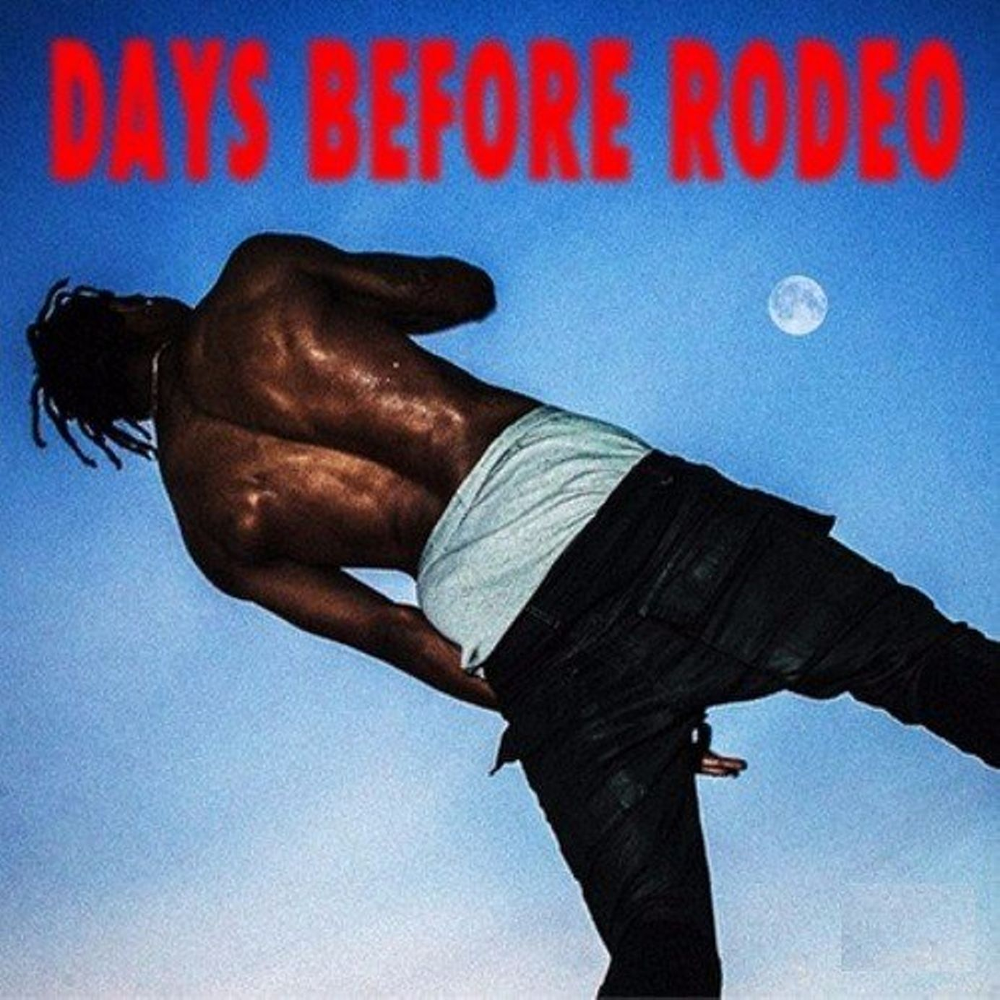
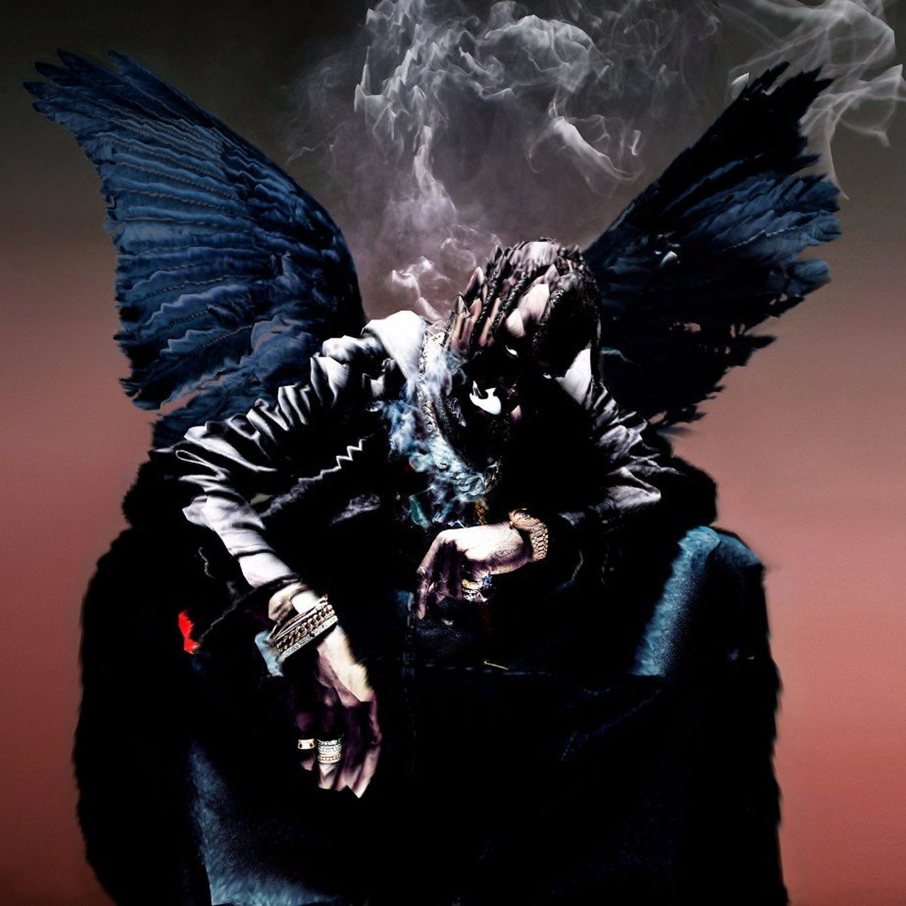
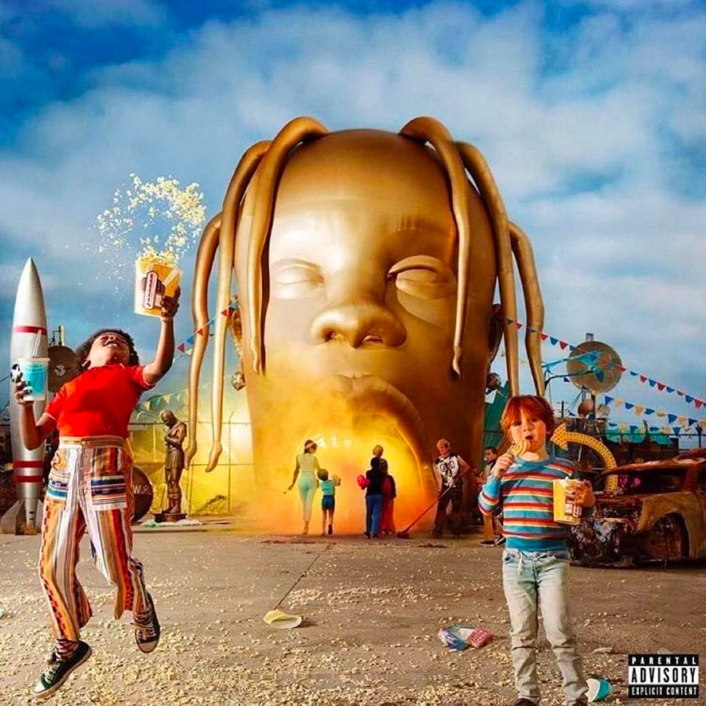

Days Before Rodeo
Released in August 2014. Grandhustle Records
Days Before Rodeo is the second mixtape released by Travis Scott and it features artists from Young Thug, Big Sean, The 1975, and Migos. Scott called it a "free album" on Twitter since it is a prequel to his first album released in the following year.
TRACKLIST
Rodeo
Birds in the Trap Sing Mcknight

ASTROWORLD
Released in August 2018. Cactus Jack Records and Grand Hustle Records
In his fourth album, Travis Scott takes his listeners on a journey to Astroworld. The rapper was inspired by the Six Flags AstroWorld theme park located in Houston, Texas that permanently closed in 2005. The album was certified triple platinum by Recording Industry Association of America.
TRACKLIST: Stargazing | Carousel | Sicko Mode | R.I.P. Screw | Stop Trying to Be God | No Bystanders | Skeletons | Wake Up | 5% Tint | NC-17 | Astrothunder | Yosemite | Can’t Say | Who? What! | Butterfly Effect | Houstonfornication | Coffee Bean